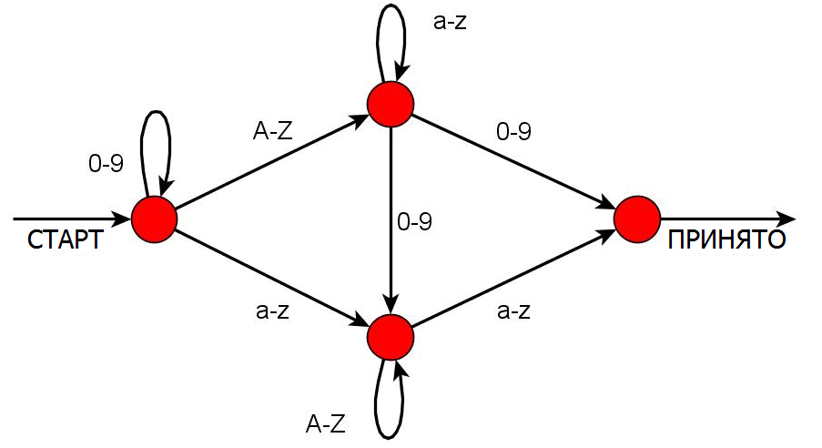

- Внизу страницы можно выбрать задачи для решения.
- У каждой задачи есть 4 варианта ответа. Задачу можно оставить без ответа.
- Правильный ответ дает 3 балла, неправильный - вычитает один балл. Если оставить задачу без ответа, то баллы не изменятся.
- После окончания решения задач перейдите на закладку "Завершение", нажмите "Завершить" и узнайте свой результат.
- Для того, чтобы узнать правильные ответы и решения, переключайтесь между задачами.
В школьном компьютерном классе бобры должны создать новые пароли к учетным записям (аккаунтам). В паролях разрешается использовать строчные и заглавные латинские буквы, а также цифры от 0 до 9. Каждый пароль должен иметь определенный порядок символов для того, чтобы быть принятым.
- A-Z обозначает любую заглавную букву алфавита.
- 0-9 обозначает любую цифру.
- a-z обозначает любую строчную букву алфавита.
| Рис. 1 | Рис. 2 |
Существуют определенные правила для того, чтобы пароль был принят:
Буквы или цифры, указанные над петлей, могут использоваться многократно в любом порядке. Например, в петле на рис. 1 бобрам разрешено использовать любое количество (или ни одной) любых заглавных букв.
Если буквы или цифры указаны рядом с ребром, то бобрам нужно использовать ровно один из этих символов. Например, ребру на рисунке 2 соответствует любая строчная буква, но только одна.
Какой из следующих паролей НЕ будет принят?

Бобёр Джон получил секретное послание. К сожалению, часть послания была уничтожена пятном красной краски.
Этот случай был предусмотрен заранее. В послании есть дополнительные квадраты. Каждый квадрат в крайнем правом столбце (столбец 6) и нижнем ряду (ряд 6) закрашен таким образом, чтобы количество черных квадратов в каждом ряду и в каждом столбце было четным.
Джон полагает, что существует 16 различных возможных кусочков посланий. Только 4 из них кажутся ему разумными. Какое из них должно стоять на месте красного пятна?
|
Редактор должен создать восьмистраничный буклет из одного листа бумаги. Лист будет сложен вдвое
(см. картинку слева; лист можно сложить по-разному по схеме на рисунке, делая сгибы внутрь или наружу и в разной очередности),
а затем разрезан на отдельные страницы, чтобы читатель смог переворачивать их в правильном порядке. Редактор должен придумать, как расположить страницы на листе так, чтобы буклет мог быть прочитан. |
Бобёр любит цветы и, возможно, именно поэтому он создал простой язык программирования для визуального дизайна, основанный на идее жизни растений. Каждая картинка начинается с квадрата a. Визуальный объект может выполнять три операции: расти, делиться или завять. Следующая программа показывает, как это происходит:
Пожалуйста, обратите внимание, что операция расти() означает рост в два раза, и что только продолговатый объект может исполнять операцию деления, порождая два более коротких объекта одинакового размера. Квадрат не может делиться.
Бобёр хочет написать программу, которая преобразует левую картинку в правую. Какие команды могут быть первыми четырьмя командами этой программы?
a.расти(восток); a.расти(восток); [b,c] = a.делись(); [d,e] = c.делись(); b.завянь(); d.завянь(); e.расти(север);
Ответ В является неверным, так как после четвертой команды картинка становится пустой. Результатами Б и Г являются прямоугольники с минимальной длиной стороны в две единицы. Их невозможно уменьшить до прямоугольника со стороной в одну единицу, используя операцию делись(). Садовник должен быть внимателен при выращивании растений!
|
Цветовая модель RGB (Red-Green-Blue красный-синий-зеленый)
широко используется в электронике и компьютерах. Каждый квадрат раскрашен красным, синим или зеленым. Частично окрашенная сеть 8 x 11 показана на рисунке слева. Обратите внимание, что в первом столбце голубой чередуется с зеленым, во втором - зеленый с красным, в третьем - голубой с зеленым и т.д |
| На карте Литвы крупные города связаны начиная с самого большого города VILNIUS (543 071 жителей) по убыванию (см. карту). Диаграмма показывает количество жителей в городах, но названия городов не указаны. |
Изображения на компьютере разделены на сеть маленьких точек, называемых пикселями. В черно-белых изображениях каждый пиксель либо черный, либо белый. Компьютер может представлять черно-белые изображения с помощью чисел, например:
| Первое число показывает количество белых пикселей, следующее число - количество черных и т.д. Таким образом, первая линия состоит из 0 белых пикселей, следом за которыми идут 5 черных пикселей. Вторая линия состоит из 2 белых, 1 черного и 2 белых пикселей. |
Какая буква будет представлена следующими числами?
0,1,3,1
0,1,3,1
0,5
0,1,3,1
0,1,3,1
| Однорукий робот может взять верхнюю тарелку из самой левой стопки тарелок и поместить ее либо в стопку 1, либо в стопку 2. Мы можем запрограммировать робота последовательностью, состоящей только из 1 и 2. Каждый номер отвечает за то, в какую стопку должна быть помещена тарелка. |
2 1 2 1 1 2 1
И стопки выглядят как на рисунке из условия задачи.
Как они выглядели до того, как программа начала исполняться?


Люсия и ее друзья зарегистрированы в социальной сети.
Линия обозначает дружбу между двумя людьми. Например, Алекс – друг Моники, но не друг Люсии. Если кто-то делится фотографией с кем-то из друзей, то эти друзья могут комментировать фотографию. Если кто-то комментирует фотографию, то все его друзья могут видеть комментарий и фотографию, но не могут комментировать ее, если изначально не могли.